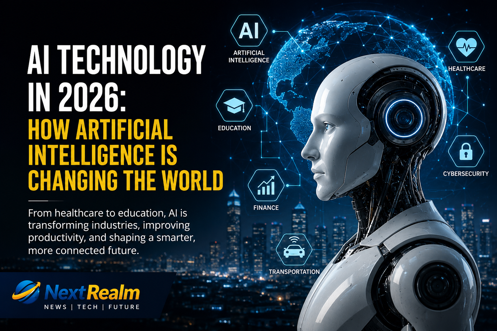

Published: 23 July 2026
Category: Technology

Artificial Intelligence is changing the world faster than ever. In 2026, AI is helping businesses, schools, hospitals, and individuals become more productive and innovative.
AI is now being used in healthcare, education, cybersecurity, finance, entertainment, and software development. Millions of people use AI-powered tools every day.
Experts believe Artificial Intelligence will continue to create opportunities for businesses and individuals worldwide. Learning about AI today could help prepare people for tomorrow's technology-driven world.